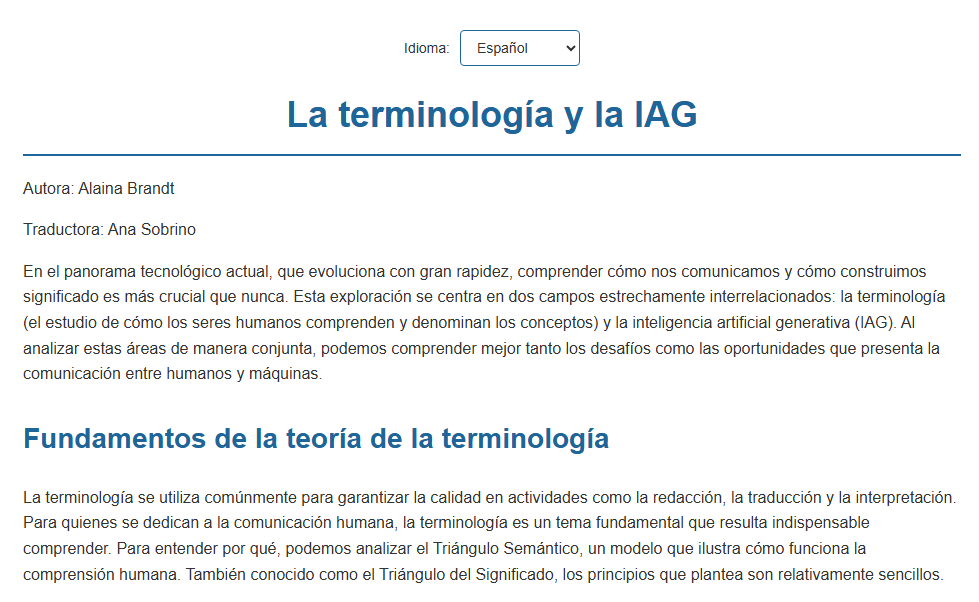
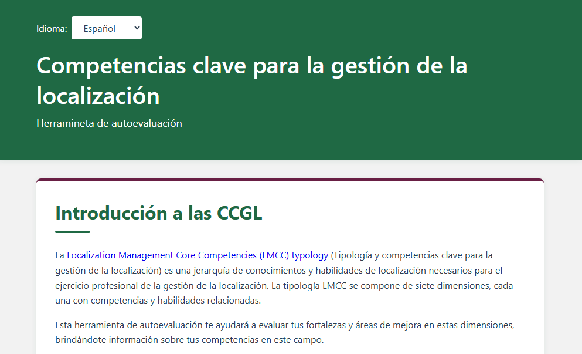
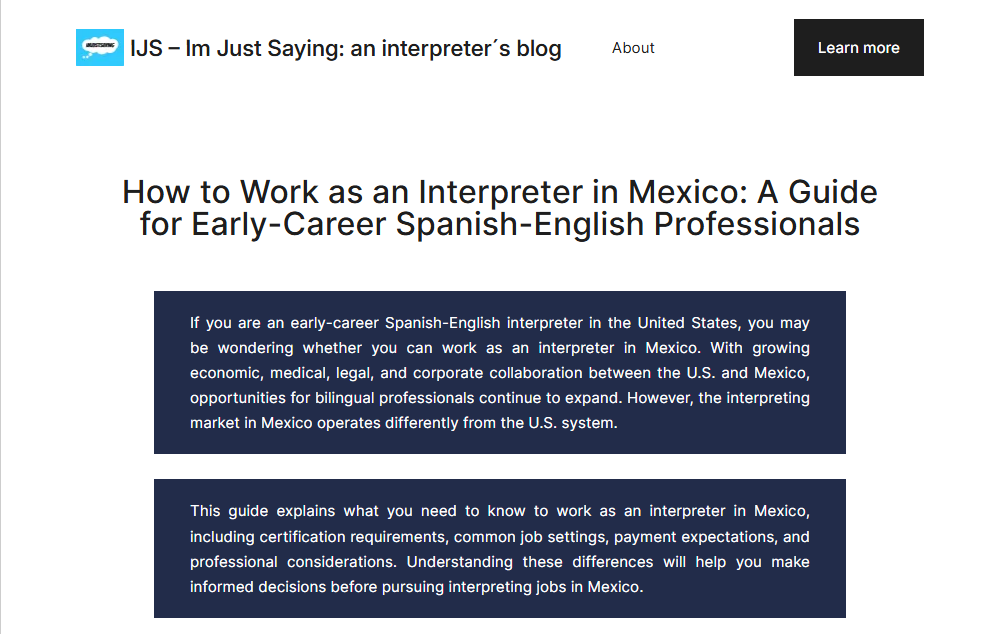
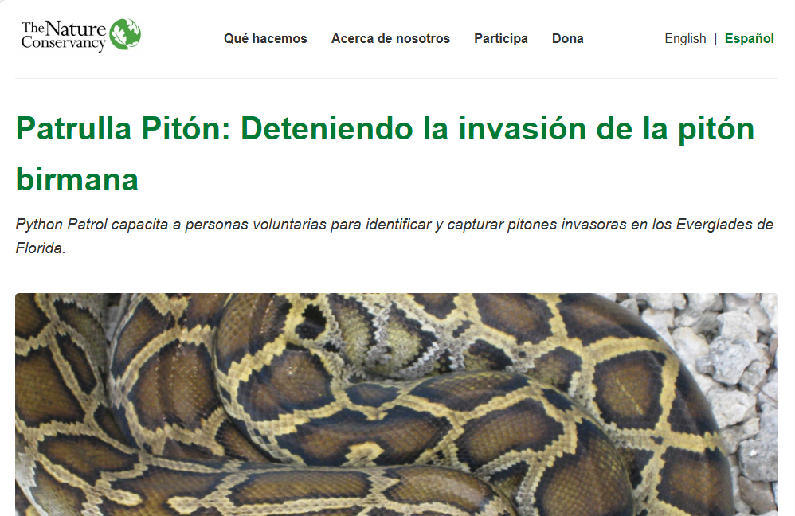

¡Hola! Me llamo Ana Cristina Sobrino Lomeli, soy intérprete y especialista en localización web que trabaja entre coreano, inglés y español. Mi experiencia en producción de eventos en vivo y mediación cultural me permite conectar no solo idiomas, sino también procesos, expectativas e intenciones creativas. Me interesa especialmente la localización digital, la accesibilidad web y la comunicación intercultural para audiencias globales. Abordo cada proyecto con precisión, claridad y sensibilidad cultural.
¡Siéntete libre de explorar mi portafolio y los ejemplos de mi trabajo. Ponte en contacto si deseas colaborar!

Localización de una página HTML sobre terminología e IA generativa del inglés estadounidense al español mexicano.
Ver proyecto
Localización de una herramienta de autoevaluación, aplicando habilidades de HTML, JSON y CSS junto con una revisión crítica de la metodología de puntuación y las decisiones de diseño visual de la herramienta.
Ver proyecto
Creación de una publicación de blog en WordPress que demostró la comprensión de los principios tradicionales de SEO, investigación de palabras clave y descubrimiento de LLM.
Ver proyecto
Uso de una herramienta TAC para localizar una página de conservación real al español de Miami.
Ver proyecto¿Te interesa trabajar en conjunto? ¡Conectemos!